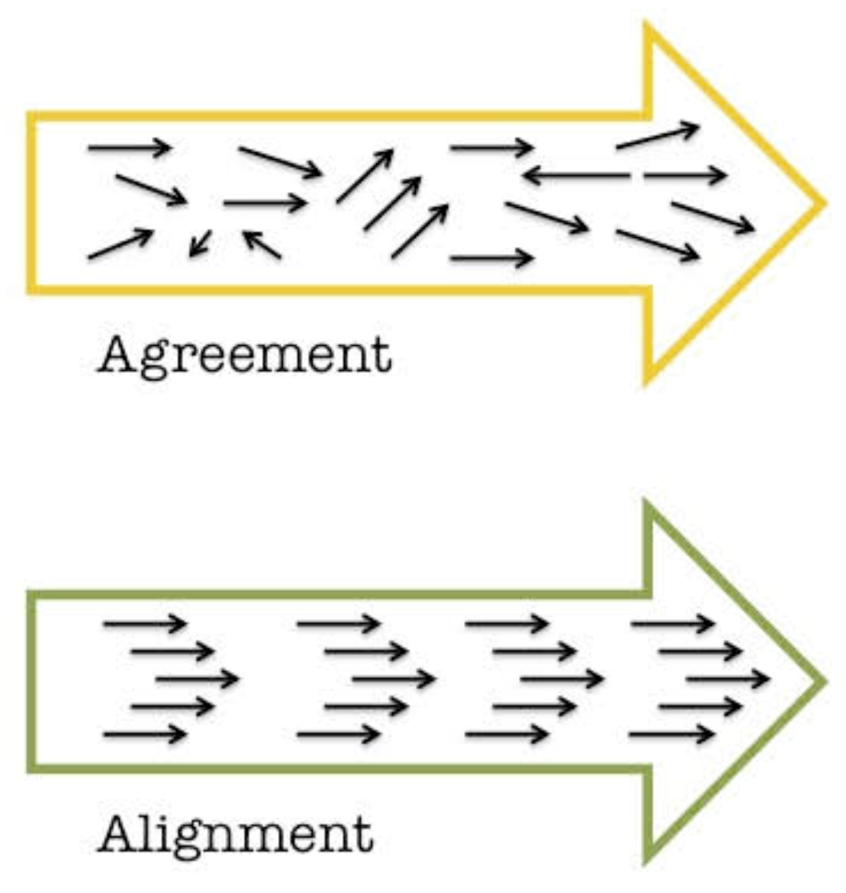
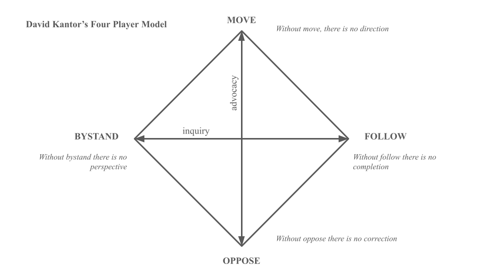
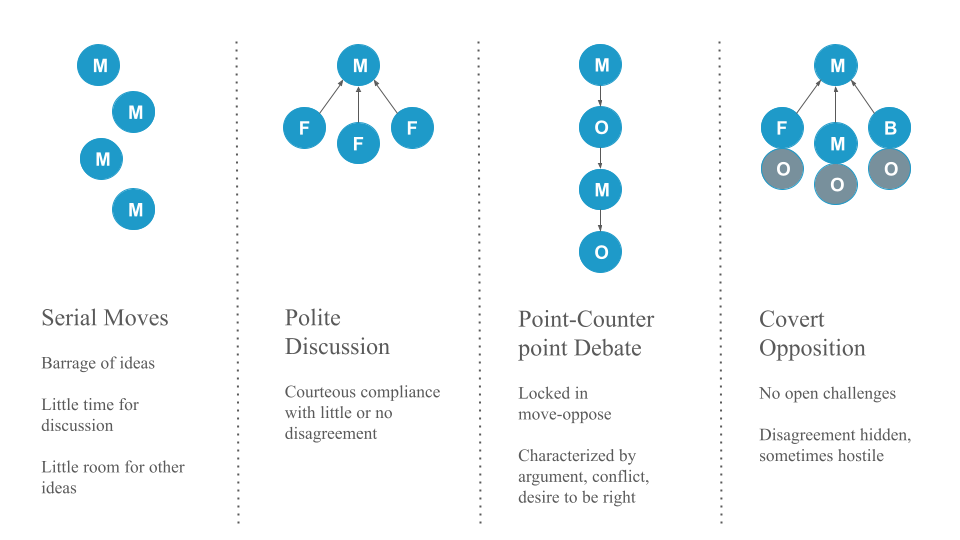
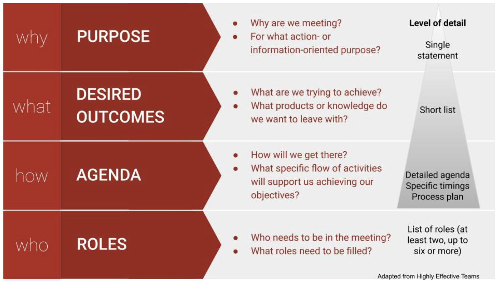
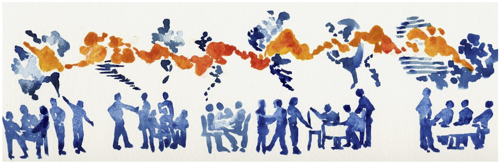

Inclusive Facilitation
Overview
The success of a collaborative synthesis science project rests in no small part on the ability of the team of researchers to work effectively together and to draw on the full range of expertise, knowledge, and capacity in the group. Effective facilitation of team meetings can go a long way toward unlocking the group’s full potential. This module focuses on inclusive facilitation techniques to enable and encourage full, thoughtful, engaged participation during virtual and in person group meetings. Many of the principles underpinning these techniques can also be applied to other aspects of managing your collaboration, outside the meeting setting.
Learning Objectives
After completing this module you will be able to:
- Describe benefits of encouraging full, thoughtful, engaged participation
- Identify methods for ensuring equitable access to participation in a team setting
- Identify one activity that privileges each thinking style
Preparation
Complete Phase 1 course survey
Networking Conversation
Inclusive facilitation is challenging, even when facilitators and participants are quite similar, but when their backgrounds, ages, or positions are different, it can be even more so. This class we’ll talk with Mack White, a graduate student who is serving as PI for the Marine Consumer Nutrient Dynamics synthesis group. He’ll address approaches for inclusive facilitation broadly, as well as the special challenges inherent in facilitating a group of colleagues who are more senior and experienced than he is.
Mack White, PhD student with Dr. Jennifer Rehage, Florida International University
Benefits of Enabling Full Participation
Creating the conditions for all team members to feel welcome and able to fully participate advances diversity, equity, and inclusion in science. As we learned in the Team Science Practices module it also has instrumental benefits, as diverse teams have been shown to be more productive and to produce higher impact results than less diverse teams. In part, that productivity can be attributed to the ability of the group to elicit and work with novel ideas and approaches, allowing more innovative analysis and problem solving.
Facilitating equitable participation also helps to unleash the full capacity of a team to get things done. Too often, potential contributors opt out of offering their skills and talents to a collaborative endeavor because they feel undervalued or unclear on how to contribute. It might not feel worth their time to try to assert an idea or opinion when it doesn’t feel welcome. A process that creates opportunities for everyone to engage and feel included can help avoid this situation.
Finally, when the time comes for decision making, effective facilitation can ensure that the full range of questions, opinions, and concerns has been surfaced and weighed before the group makes a decision. This is critical. If you move forward with surface-level agreement, but without true alignment, commitment to the decision is likely to erode over time.

Moving from Debate to Dialogue
Dialogue is a collaborative effort to understand and learn from each other. Debate, on the other hand, is an oppositional effort to convince the other side that you are right. Inclusive facilitation aims to support dialogue and skillful discussion. Dialogue allows groups to recognize the limits on their own and others’ individual perspectives and to strive for more coherent thought. Dialogue becomes a container for collective thinking and exploration - a process that can take teams in directions not imagined or planned. In dialogue, all views are treated as equally valid, and different views are presented as a means toward discovering a new view. Participants listen to understand one another, not to win. Complex issues are explored and shared meaning is created. When it comes time to make a decision, skillful discussion is required. Both skillful discussion and dialogue are critical to the collaborative process, and the more artfully a group can move between these two forms of discourse (and out of less productive debate and polite discussion) according to what is needed, the more effective the group will be.
- Intent to win
- Listening to be understood
- Power struggles
- Competition “turf war”
- Loudest wins
- Ideas judged by who says them
- Intent to protect self, others
- Surface friendly
- Ideas judged by friendships/relationships
- Impulsive, based on feeling, low data
- Influence occurs outside the meeting
- Limited active or empathetic listening
- Intent is closure; informed decisions
- Balance influence and inquiry
- Focus on issues not personalities
- Reasoning is made explicit
- Ask about assumptions without criticizing
- Influence is based in logic and data
- Intent to build mutual understanding
- Listening to understand thoughts and feelings
- Able to suspend assumptions
- Energy used to find the right questions
- “Container” for collective thinking
- Influence is found in shared meaning created by groups
David Kantor’s Four Player Model is a helpful tool for diagnosing “stuck” patterns of communication, (including entrenched debate and polite discussion), and interceding to help shift to a more productive pattern.
Based on over 30 years of observation and study of face-to-face communication in many groups, Kantor developed the Four Player Model and a broader theory of Structural Dynamics. The model identifies four actions of effective communication:
- Move - Initiate an idea, action, or direction for conversation
- Follow - Continue the direction or flow of the conversation; support a move, either by agreeing or asking for more information
- Oppose - Challenge or disagree with the idea, action, or suggested direction
- Bystand - Notice and articulate what’s happening in the conversation, add a neutral perspective

Each action in a group conversation can be coded into one of these four action modes. Most of us have one of these modes that we feel most comfortable in and tend to default to in a group. The most effective conversations involve good listening and the skillful use of all four modes. Common “stuck” patterns emerge when groups are not deploying all four actions.

Lots of idea generation; may feel like a barrage; no clear thread, decision, or follow through
Any of the other modes can help here, since move is the only mode being engaged.
Add a follow to give momentum to a particular move and steer the conversation in that direction, e.g., “Can we go back to the idea that Jose put on the table? That felt like a topic that could really use our attention. Shall we focus there?”
Offer an effective oppose - “We’ve heard a lot of different ideas. I’d like to focus on the one Amelia laid out. I’m interested in the research question, but I don’t think machine learning is going to be the most productive approach. Can we dig in to this one?”
Use a bystand to bring awareness to and dirsupt the dynamic - “Hey gang, we’re 20 minutes into our call and we’ve put a lot of different topics on the table. Where do we want to focus ourselves so we can walk away with some clear next steps?”
Moves are followed with little discussion or resistance; also known as Courteous Compliance
Prompt an effective oppose:
- Who sees it differently?
- What’s at risk here?
- What other angles should we consider?
Invite a bystand:
- Where is the group right now?
- What are you noticing?
- Is there an elephant in the room that needs to be named?
Individuals are locked in a back and forth where each move is met with resistance / opposition
Invite a follow:
- What do you like about the proposal on the table?
- What do you agree with that we could build upon?
Coach for a more effective oppose by inviting those who have been opposing to identify some aspect of the idea they do agree with (even if only 2%), in addition to the specific aspects they object to.
Invite a bystand:
- In addition to the two viewpoints on the table, I’d love to hear from some other perspectives.
- What are you noticing?
- What might we be missing?
On the surface, moves are followed, and the conversation appears harmonious, but below the surface, people have unspoken reservations. Opposition tends to be expressed outside the bounds of the conversation or harbored as resentment.
Uneven power dynamics are often behind this pattern - group members defer to the moves of those with more power or seniority.
Invite those with more power to experiment with following or bystanding to open up space for other players to make a move.
Prompt a transparent oppose:
- Who sees it differently?
- What’s at risk here?
- Are there some cons to the proposed idea?
If others aren’t comfortable, you can offer an oppose, e.g., by suggesting the limits of the proposed move be tested across different scenarios.
Offer a bystand, e.g., “I want to offer a reflection from another team I was part of. On that team, we kept having meetings where it seemed like everyone was in agreement, but then we would leave, and over and over again there’d be little follow through and more than a little grousing. People’s real opinions were only coming out in side conversations outside of the meeting. We lost a lot of time and forward momentum because people didn’t feel like they could air their concerns in the larger group. Do you see that happening here? Does anyone have a suggestion for how to make this a safer space to critically discuss ideas?”
Designing Meetings for All Thinking Styles
As we learned earlier in the course, people have different thinking preferences which influence what they expect and enjoy in group processes (see Ned Herrmann’s Whole Brain Model below).
![Top-down image of a human brain divided into four sections next to a circle divided into the same sections. Top left of both is blue, labeled 'analytical' in the circle. Top right is yellow, labeled 'experimental' in the circle. Bottom right is red and labeled 'relational' in circle. Bottom left is green and is labeled 'practical' in the circle. The circle also labels the lines separating each pair of adjacent quadrants as follows: analytical and experimental is 'intellectual', experimental and relational is 'intuitive', relational and practical is 'instinctive', and practical and analytical is 'rational'.](images/figure_whole-brain-model.png)
![Circle divided into same quadrants as previous image where each quadrant contains the expectations and enjoyments of that thinking style. Top left expects clear/concise info, well articulated ideas, accuracy, and certainty and enjoys a good debate, critical analysis, and readings. Top right expects an overview, a conceptual framework, freedom to explore, analogies/metaphors, and visuals and enjoys initiative and imagination, connections to other approaches, newness and 'fun'. Bottom right expects involvement with others, personal anecdotes, experimental approach, and feelings to be considered and enjoys the personal touch, group discussion and harmony. Bottom left expects step-by-step unfolding, detailed program, punctuality, and an explanation of how and enjoys a structured approach, low risk, and concrete examples](images/figure_thinking-style-expects.png)
Tool Highlight: Collaborative Whiteboards
Collaborative whiteboards are useful tools for capturing ideas from a group during virtual meetings. They range from simple (EasyRetro, Zoom’s whiteboard function) to complex (Mural, miro). Benefits include simultaneous input, the ability to organize information into discrete, movable chunks, and the visual (and lasting) nature of the output.
Ensuring Equitable Access to Participation
To tap diverse perspectives and catalyze productivity and creative problem-solving, we need to design meetings (and projects) so everyone can participate fully, rather than just a few. When tackling complex challenges, voices from the edge are often critical to uncovering new insights and approaches. Democratizing participation doesn’t have to be all about controlling the dominant voices in a group; with thoughtful planning and some simple tools, you can design any conversation so that everyone can contribute.
A few simple techniques can help:
- Mix up the format, e.g., combining silent reflection, round robin, breakout groups, plenary, and/or “liberating structures” (more on these below)
- Offer different channels for information sharing - verbal, nonverbal, written, visual, informal, formal
- Track and stack who wants to speak
- Invite, amplify, and credit “quieter” voices
- Use active listening - reflect back what you think you are hearing in simple terms and check your assumptions regularly
Be creative and empathetic when you design your agenda. Think about your participants and what is going to help all of them participate fully and creatively. Beyond the thinking preferences, you may also want to consider these other dimensions of diversity when planning your process design and facilitation:
- Introverts vs. extroverts
- Visual, auditory and kinesthetic learners
- Disciplinary diversity
- Career stage
- Language
- Time zone (for geographically distributed teams)
Process Design
Good meeting design starts with understanding your purpose and objectives, as well as your participants. Once you understand why you need to meet (your overarching goal) and what you want to accomplish (the specific outcomes you are driving toward), you can turn to how you will accomplish your purpose (i.e. the agenda of activities, timings, and tech) and who will play what roles. You want participants to know their role and how to be at their best.
A good rule of thumb is to allow 2-3x as much time to plan a meeting as its duration.

Online Meetings
Online meetings benefit from all the same considerations as in person meetings, plus a little extra care and planning. Keeping your team engaged is doubly challenging in a virtual setting: our computers are full of distractions (email! notifications! internet rabbit holes!) AND as the facilitator, it’s harder to tell whether participants are engaged when all you have to go on is a small video window. Managing people’s energy and attention and creating opportunities for real human connection are real challenges. On the flip side, online meetings allow distributed teams to stay connected and can provide a dynamic and rich platform for shared work.
In addition to the general tips above, in online settings:
- Be thoughtful and equitable when scheduling across time zones
- Develop online meeting norms for your team and enforce them (e.g., use of chat, indicating you want to speak)
- Ask a team member to help you monitor the chat and assist participants with tech or connectivity challenges
- Encourage personal connection (e.g., with check ins, invitations to have video on)
- Check engagement regularly
- Provide breaks (bio breaks, silence, invitations to step away from the screen for reflection)
- Make video optional
- Take advantage of tech tools (breakout rooms, polls, shared notes, virtual whiteboards, recording, transcription, etc.)
Roles
It’s very difficult to both facilitate a conversation and engage fully in it as a participant. If you add taking notes on top of that, it’s sure to become overwhelming. So recruit some help. The number of roles you need to fill will depend on the size of the group and the complexity of the process. Online meetings particularly benefit from a team approach to facilitation. Share and rotate duties over time:
- Process facilitator - sets tone and pace, mediates conflicts, and ensures all voices are being heard, interpersonal dynamics are positive/effective, and group is staying on task
- Meeting chair (optional) - keeps an eye on the overall vision and progress of the meeting
- Timekeeper - may also be the chair or facilitator
- Tech Host - monitors chat, sets up breakout rooms, records meeting, troubleshoots technology as needed in virtual/hybrid meetings
- Notetaker - captures action items and notes, often in a google doc that can be viewed and added to by others; may also produce a meeting summary
- Scribe - captures important points that can be seen in real time by the whole group, usually on a whiteboard or flipchart
- Spotter - keeps a running list of who is waiting to speak (especially in large groups or intense discussions)
- Relationship monitor - tracks group dynamics and actively works to help everyone feel included and engaged on personal and social levels, may also be the facilitator
- Participation monitor - engineers opportunities for participation, quells interrupters, amplifies and credits the messages of quieter participants, may also be the facilitator
As you get to know your team members, you can start to match people to these different roles based on their skills and recruit them to help.
Alternatives to Conventional Meeting Structures
Differences in thinking and learning styles, disciplinary background, power, and other dimensions of diversity mean that there’s no such thing as a one-size-fits-all approach for participatory processes. Nonetheless, we tend to default to a small set of traditional ways of sharing information and engaging people when we meet. These conventional structures are often either too limiting (presentations, status reports, and managed discussions) or too free-form and disorganized (open discussions and brainstorms) to effectively tap the wisdom of the group (Lipmanowicz and McCandless, 2014). To support the engagement of all participants, we need to break out of those traditional ways of meeting.
Books and websites like Liberating Structures, Gamestorming, and the Facilitator’s Guide to Participatory Decisionmaking offer dozens of alternative group processes (see Resources). Known as microstructures or knowledge games, these simple, fun activities are designed to include everyone, distribute control, and unleash creativity. One or more activities can be matched to your intended outcomes and arranged in a sequence to advance the team toward your overall goal. Liberating Structures offers a matching matrix to help you identify microstructures that could fit your needs and an app you can use to browse and assemble strings of activities. Gamestorming organizes their activities into categories (e.g. games for opening, games for decision-making) for exploration.
Here are a few microstructures that work well for small group virtual meetings. They also work for larger groups and in person settings:
Tool Highlights: Microstructures
| Microstructure | Thinking Preference | Purpose | How It Works |
|---|---|---|---|
| Icebreaker / check in | Relational | Connect as a team, start on a positive, human note | Many versions exist, e.g., one word to describe how you are arriving; one thing you are feeling grateful for today; coolest thing you’ve learned lately; describe where you grew up without using any place names, etc. |
| Round robin / go around | Analytical, Relational | Hear from everyone | Everyone answers the same prompt. Alternatives to going in order: each speaker calls on the next person after they have shared - keeping track of who has / hasn’t spoken keeps people paying attention; popcorn-style - people share in the order that they feel moved to speak |
| 1,2,4,all | Analytical, Practical, Experimental, Relational | Engage everyone in generating questions, ideas, and suggestions | Individual reflection; Pair share; Two pairs combine and share as a group of 4; Small groups share highlights with whole group |
| Min specs | Experimental | Specify simple rules the group must follow to achieve your purpose | 1,2,4,all format; Individuals brainstorm things the group must do or must not do to achieve its purpose; Share in pairs or small groups; Pare the list down to the minimum set of rules you could follow and still achieve the purpose |
| Affinity Map | Analytical, Relational | Surface ideas, detect patterns, and analyze | Brainstorm ideas using sticky notes on a wall or virtual whiteboard; Cluster into categories; If useful, prioritize within categories |
| Brainwriting | Analytical, Practical, Experimental, Relational | Surface and elaborate ideas | (1) Brainstorm ideas in a google doc or virtual whiteboard (or on index cards in person); (2) Read and add to each other’s ideas; (3) Discuss |
| What, So What, Now What | Analytical, Practical, Experimental | Make sense of past progress or experiences and decide on future actions | What - As a group, compile the facts and observations relevant to the context; So What - Reflect on the facts and their implications, identify patterns, generate hypotheses; Now What - Draw conclusions - What actions make sense? |
| Fist to Five / Gradient of Agreement | Practical, Relational | Assess degree of consensus; seek closure | Use when ready to close a discussion or make a decision; Invite participants to rate their level of agreement with a proposal on a scale of 0-5; Five fingers means “absolute, total agreement or support” and a fist means “complete opposition” |
| Polling | Analytical, Practical | Rank alternatives | Before you start - clarify how you will use the results - are you gathering information or taking a vote to make a decision?; Decide how many votes per person; In person - use sticky dots; Virtually - use +1s in a google doc or a digital polling tool (e.g., Zoom, Mural, slido) |
| Feasibility-Impact Matrix (see figure below) | Analytical, Practical, Experimental | Compare alternatives | Discuss and agree on definitions for two criteria for evaluating ideas: feasibility of implementation and impact potential; Rate each idea against these two axes and map onto 2x2 grid |

Harvesting Content
As you go, and definitely before your meeting is over, engage your team in synthesizing and capturing the information that has been discussed. This helps you to deepen understanding, document your workflow and decisions, and pick up easily next time. Use a consistent system - like a running notes document linked in the calendar item. Graphics or drawings can be a valuable complement to oral and written content in making thinking visible.

Consider using:
- Grids to organize information
- Conceptual models or mind maps to articulate shared understanding of complex systems
- Manifestos, abstracts, and other written collateral to distill ideas
When capturing notes, try to use people’s own words; if necessary ask them to distill long or complex points into a headline you can capture. Invite them to offer corrections if the notetaker didn’t capture what they meant.
Additional Resources
Papers & Documents
- Khuri et al., Inclusive Practice Glossary for Facilitators. 2024.
- Cravens, A.E., et al., Science facilitation: navigating the intersection of intellectual and interpersonal expertise in scientific collaboration. 2022.
- Woodley, L. et al., A guide to using virtual events to facilitate community building: Making a PACT for more engaging virtual meetings and events. 2021.
- Tarallo, B. & Monlux, M. Surviving the Horror of Online Meetings: How to Facilitate Good Virtual Meetings & Manage Meeting Monsters. 2021.
- Lipmanowicz & McCandless. The Surprising Power of Liberating Structures: Simple Rules to Unleash a Culture of Innovation. Liberating Structures Press. 2014.
- Kaner, S. Facilitator’s Guide to Participatory Decision-Making (Revised). 2014.
- Kantor, D. Reading the room: Group dynamics for coaches and leaders. John Wiley & Sons. 2012.
- Gray, D. et al., Gamestorming: A Playbook for Innovators, Rulebreakers, and Changemakers. O’Reilly Media. 2010.
- Bohm, D. On Dialogue. Routledge Classics. 2004.
Workshops & Courses
Websites
- Liberating Structures: Including and Unleashing Everyone
- Gamestorming
- SciTS and Team Science Resources compiled by INSciTS, the International Network for the Science of Team Science